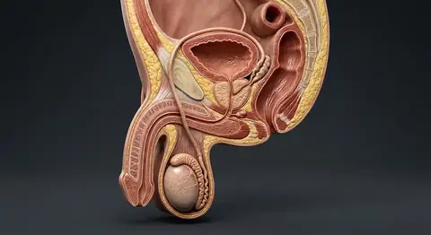
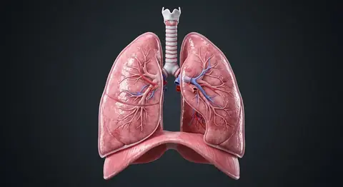
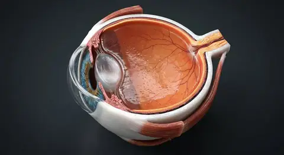
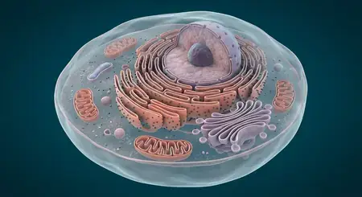

Corpus / anatomy blog & study articles
In-depth anatomy articles, reference tables and exam guides.
Explore detailed, source-linked anatomy articles with clear explanations, study diagrams and practical reference tables—each connected to an illustrated chapter in the interactive atlas.

Male Reproductive System: Anatomy and FunctionReproductive System · Male Anatomy↗Latest anatomy study articles
Reproductive System · Male Anatomy · 8 min readMale Reproductive System: Anatomy and FunctionFollow sperm production and transport from seminiferous tubules through the reproductive ducts, and map the glands, external organs and hormone signals. Digestive System · Liver Study Guide · 8 min readLiver Anatomy: Lobes, Lobules, Blood Flow and BileMap the liver’s lobes and porta hepatis, trace portal and arterial inflow through sinusoids, and follow bile in the opposite direction toward ducts.
Digestive System · Liver Study Guide · 8 min readLiver Anatomy: Lobes, Lobules, Blood Flow and BileMap the liver’s lobes and porta hepatis, trace portal and arterial inflow through sinusoids, and follow bile in the opposite direction toward ducts. Integumentary System · Skin Study Guide · 8 min readHuman Skin: Layers, Appendages and FunctionExplore epidermal strata, dermal connective tissue, the underlying hypodermis, hair follicles, glands and nails in this structured skin anatomy overview.
Integumentary System · Skin Study Guide · 8 min readHuman Skin: Layers, Appendages and FunctionExplore epidermal strata, dermal connective tissue, the underlying hypodermis, hair follicles, glands and nails in this structured skin anatomy overview. Skeletal System · Bone Study Guide · 8 min readHuman Skeleton: 206 Bones and Their OrganizationStudy the adult skeleton’s axial and appendicular divisions, bone shapes, compact and spongy tissue, major joints, marrow and lifelong remodelling.
Skeletal System · Bone Study Guide · 8 min readHuman Skeleton: 206 Bones and Their OrganizationStudy the adult skeleton’s axial and appendicular divisions, bone shapes, compact and spongy tissue, major joints, marrow and lifelong remodelling. Muscular System · Study Guide · 8 min readHuman Muscular System: Types and ContractionCompare skeletal, cardiac and smooth muscle, then follow muscle organization from fascicle to sarcomere and connect contraction to joint movement.
Muscular System · Study Guide · 8 min readHuman Muscular System: Types and ContractionCompare skeletal, cardiac and smooth muscle, then follow muscle organization from fascicle to sarcomere and connect contraction to joint movement. Urinary System · Kidney Study Guide · 8 min readHuman Kidney: Structure, Nephron and Urinary SystemFollow the kidney from cortex and medulla to nephron, glomerulus and collecting duct, and learn how filtration and tubular processing form urine.
Urinary System · Kidney Study Guide · 8 min readHuman Kidney: Structure, Nephron and Urinary SystemFollow the kidney from cortex and medulla to nephron, glomerulus and collecting duct, and learn how filtration and tubular processing form urine. Digestive System · Study Guide · 8 min readHuman Digestive System: Organs and FunctionTrace food through the mouth, esophagus, stomach and intestines, and connect digestive-tract wall layers with the liver, gallbladder and pancreas.
Digestive System · Study Guide · 8 min readHuman Digestive System: Organs and FunctionTrace food through the mouth, esophagus, stomach and intestines, and connect digestive-tract wall layers with the liver, gallbladder and pancreas. Nervous System · Brain Study Guide · 8 min readHuman Brain: Lobes, Structures and FunctionsMap the cerebrum, diencephalon, brainstem and cerebellum, then connect their major landmarks to meninges, cerebrospinal fluid and blood supply.Integumentary · Hair Study Guide · 7 min readHair Anatomy: What Is Inside a Single Hair?Explore the cuticle, cortex and medulla of a hair shaft, then follow the follicle, bulb, matrix, dermal papilla and growth cycle beneath the skin.
Nervous System · Brain Study Guide · 8 min readHuman Brain: Lobes, Structures and FunctionsMap the cerebrum, diencephalon, brainstem and cerebellum, then connect their major landmarks to meninges, cerebrospinal fluid and blood supply.Integumentary · Hair Study Guide · 7 min readHair Anatomy: What Is Inside a Single Hair?Explore the cuticle, cortex and medulla of a hair shaft, then follow the follicle, bulb, matrix, dermal papilla and growth cycle beneath the skin. Foundations · Anatomy Study Guide · 6 min readAnatomical Planes and Directional TermsLearn the standard anatomical position, sagittal, coronal and transverse planes, plus directional pairs used to describe regions and medical images clearly.
Foundations · Anatomy Study Guide · 6 min readAnatomical Planes and Directional TermsLearn the standard anatomical position, sagittal, coronal and transverse planes, plus directional pairs used to describe regions and medical images clearly. Cardiovascular · Study Guide · 7 min readHuman Heart Layers, Chambers, Valves & Conduction PathsExplore the human heart wall layers, four chambers, atrioventricular and semilunar valves, coronary arteries, and the SA-to-Purkinje electrical conduction.
Cardiovascular · Study Guide · 7 min readHuman Heart Layers, Chambers, Valves & Conduction PathsExplore the human heart wall layers, four chambers, atrioventricular and semilunar valves, coronary arteries, and the SA-to-Purkinje electrical conduction. Neuroanatomy · Study Guide · 8 min read12 Cranial Nerves (CN I–XII): Nuclei, Foramina & GuidesStudy all 12 cranial nerves (CN I–XII) in order with brainstem nuclei, skull base foramina, sensory and motor modalities, parasympathetic paths, and tests.
Neuroanatomy · Study Guide · 8 min read12 Cranial Nerves (CN I–XII): Nuclei, Foramina & GuidesStudy all 12 cranial nerves (CN I–XII) in order with brainstem nuclei, skull base foramina, sensory and motor modalities, parasympathetic paths, and tests.
Digestive System · Liver Study Guide · 8 min readLiver Anatomy: Lobes, Lobules, Blood Flow and BileMap the liver’s lobes and porta hepatis, trace portal and arterial inflow through sinusoids, and follow bile in the opposite direction toward ducts.Integumentary System · Skin Study Guide · 8 min readHuman Skin: Layers, Appendages and FunctionExplore epidermal strata, dermal connective tissue, the underlying hypodermis, hair follicles, glands and nails in this structured skin anatomy overview.Skeletal System · Bone Study Guide · 8 min readHuman Skeleton: 206 Bones and Their OrganizationStudy the adult skeleton’s axial and appendicular divisions, bone shapes, compact and spongy tissue, major joints, marrow and lifelong remodelling.Muscular System · Study Guide · 8 min readHuman Muscular System: Types and ContractionCompare skeletal, cardiac and smooth muscle, then follow muscle organization from fascicle to sarcomere and connect contraction to joint movement.
Respiratory System · Lung Study Guide · 8 min readHuman Lungs: Structure, Airways and BreathingTrace air from the conducting passages to alveoli, compare right and left lung lobes, and learn how pleura and pulmonary capillaries support gas exchange.Urinary System · Kidney Study Guide · 8 min readHuman Kidney: Structure, Nephron and Urinary SystemFollow the kidney from cortex and medulla to nephron, glomerulus and collecting duct, and learn how filtration and tubular processing form urine.
Sensory System · Eye Study Guide · 7 min readHuman Eye: Structure, Layers and VisionFollow light through the cornea, pupil and lens to the retina, and learn how the eye’s fibrous, vascular and neural tunics support vision.Digestive System · Study Guide · 8 min readHuman Digestive System: Organs and FunctionTrace food through the mouth, esophagus, stomach and intestines, and connect digestive-tract wall layers with the liver, gallbladder and pancreas.Nervous System · Brain Study Guide · 8 min readHuman Brain: Lobes, Structures and FunctionsMap the cerebrum, diencephalon, brainstem and cerebellum, then connect their major landmarks to meninges, cerebrospinal fluid and blood supply.Integumentary · Hair Study Guide · 7 min readHair Anatomy: What Is Inside a Single Hair?Explore the cuticle, cortex and medulla of a hair shaft, then follow the follicle, bulb, matrix, dermal papilla and growth cycle beneath the skin.
Foundations · Cell Biology Study Guide · 8 min readHuman Cell Anatomy: Organelles and Their FunctionsLearn how the plasma membrane, nucleus, ribosomes, endoplasmic reticulum, Golgi, mitochondria and cytoskeleton support a specialized human cell.Foundations · Anatomy Study Guide · 6 min readAnatomical Planes and Directional TermsLearn the standard anatomical position, sagittal, coronal and transverse planes, plus directional pairs used to describe regions and medical images clearly.Cardiovascular · Study Guide · 7 min readHuman Heart Layers, Chambers, Valves & Conduction PathsExplore the human heart wall layers, four chambers, atrioventricular and semilunar valves, coronary arteries, and the SA-to-Purkinje electrical conduction.Neuroanatomy · Study Guide · 8 min read12 Cranial Nerves (CN I–XII): Nuclei, Foramina & GuidesStudy all 12 cranial nerves (CN I–XII) in order with brainstem nuclei, skull base foramina, sensory and motor modalities, parasympathetic paths, and tests.